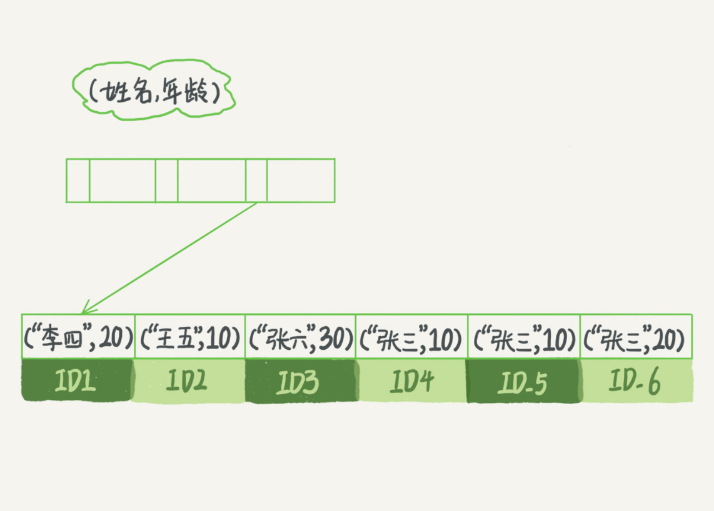
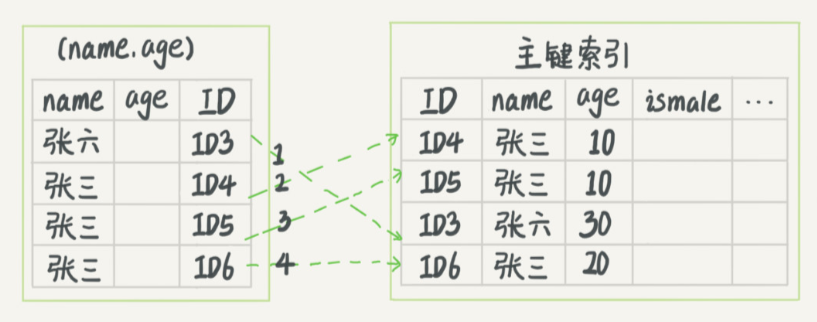
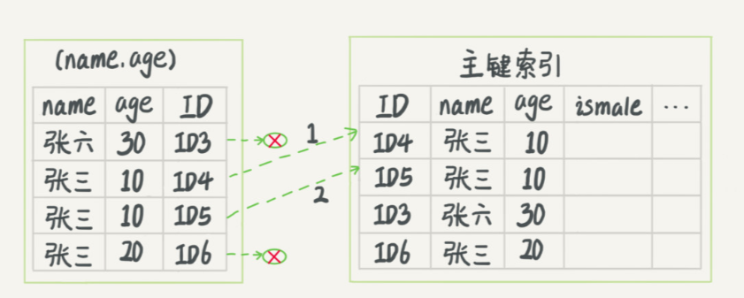

05、深入浅出索引（下）
1 | mysql> create table T ( |
上面这个表T中，如果我执行 select * from T where k between 3 and 5，需要执行几次树的搜索操作，会扫描多少行？
这条SQL查询语句的执行流程：
- 在k索引树上找到k=3的记录，取得 ID = 300；
- 再到ID索引树查到ID=300对应的R3；
- 在k索引树取下一个值k=5，取得ID=500；
- 再回到ID索引树查到ID=500对应的R4；
- 在k索引树取下一个值k=6，不满足条件，循环结束。
在这个过程中，回到主键索引树搜索的过程，我们称为回表。可以看到，这个查询过程读了k索引树的3条记录（步骤1、3和5），回表了两次（步骤2和4）。
在这个例子中，由于查询结果所需要的数据只在主键索引上有，所以不得不回表。那么，有没有可能经过索引优化，避免回表过程呢？
覆盖索引
如果执行的语句是 select ID from T where k between 3 and 5，这时只需要查ID的值，而ID的值已经在k索引树上了，因此可以直接提供查询结果，不需要回表。也就是说，在这个查询里面，索引k已经“覆盖了”我们的查询需求，我们称为覆盖索引。
由于覆盖索引可以减少树的搜索次数，显著提升查询性能，所以使用覆盖索引是一个常用的性能优化手段。
需要注意的是，在引擎内部使用覆盖索引在索引k上其实读了三个记录，R3~R5（对应的索引k上的记录项），但是对于MySQL的Server层来说，它就是找引擎拿到了两条记录，因此MySQL认为扫描行数是2。
基于上面覆盖索引的说明，我们来讨论一个问题：在一个市民信息表上，是否有必要将身份证号和名字建立联合索引？
假设这个市民表的定义是这样的：
1 | CREATE TABLE `tuser` ( |
身份证号是市民的唯一标识。 如果有根据身份证号查询市民信息的需求，我们只要在身份证号字段上建立索引就够了。而再建立一个（身份证号、姓名）的联合索引，是不是浪费空间？
如果现在有一个高频请求，要根据市民的身份证号查询他的姓名，这个联合索引就有意义了。它可以在这个高频请求上用到覆盖索引，不再需要回表查整行记录，减少语句的执行时间。
当然，索引字段的维护总是有代价的。因此，在建立冗余索引来支持覆盖索引时就需要权衡考虑了。这正是业务DBA，或者称为业务数据架构师的工作。
最左前缀原则
看到这里你一定有一个疑问，如果为每一种查询都设计一个索引，索引是不是太多了?
如果我现在要按照市民的身份证号去查他的家庭地址呢？虽然这个查询需求在业务中出现的概率不高，但总不能让它走全表扫描吧？反过来说，单独为一个不频繁的请求创建一个（身份证号，地址）的索引又感觉有点浪费。应该怎么做呢？这里，我先和你说结论吧。
B+树这种索引结构，可以利用索引的“最左前缀”，来定位记录。
为了直观地说明这个概念，我们用（name，age）这个联合索引来分析。
可以看到，索引项是按照索引定义里面出现的字段顺序排序的。当你的逻辑需求是查到所有名字是“张三”的人时，可以快速定位到ID4，然后向后遍历得到所有需要的结果。
如果你要查的是所有名字第一个字是“张”的人，你的SQL语句的条件是”where name like ‘张%’”。这时，你也能够用上这个索引，查找到第一个符合条件的记录是ID3，然后向后遍历，直到不满足条件为止。
可以看到，不只是索引的全部定义，只要满足最左前缀，就可以利用索引来加速检索。这个最左前缀可以是联合索引的最左N个字段，也可以是字符串索引的最左M个字符。
基于上面对最左前缀索引的说明，我们来讨论一个问题：
在建立联合索引的时候，如何安排索引内的字段顺序。
这里我们的评估标准是，索引的复用能力。因为可以支持最左前缀，所以当已经有了(a,b)这个联合索引后，一般就不需要单独在a上建立索引了。因此，第一原则是，如果通过调整顺序，可以少维护一个索引，那么这个顺序往往就是需要优先考虑采用的
所以现在你知道了，这段开头的问题里，我们要为高频请求创建(身份证号，姓名）这个联合索引，并用这个索引支持“根据身份证号查询地址”的需求。
那么，如果既有联合查询，又有基于a、b各自的查询呢？查询条件里面只有b的语句，是无法使用(a,b)这个联合索引的，这时候你不得不维护另外一个索引，也就是说你需要同时维护(a,b)、(b) 这两个索引。
这时候，我们要考虑的原则就是空间了。比如上面这个市民表的情况，name字段是比age字段大的 ，那我就建议你创建一个（name,age)的联合索引和一个(age)的单字段索引。
索引下推
不符合最左前缀的部分，会怎么样呢？
以市民表的联合索引（name, age）为例。如果现在有一个需求：检索出表中“名字第一个字是张，而且年龄是10岁的所有男孩。
那么，SQL语句是这么写的：
1 | select * from tuser where name like '张%' and age=10 and ismale=1; |
你已经知道了前缀索引规则，所以这个语句在搜索索引树的时候，只能用 “张”，找到第一个满足条件的记录ID3。当然，这还不错，总比全表扫描要好。然后呢？当然是判断其他条件是否满足。
在MySQL 5.6之前，只能从ID3开始一个个回表。到主键索引上找出数据行，再对比字段值。而MySQL 5.6 引入的索引下推优化（index condition pushdown)， 可以在索引遍历过程中，对索引中包含的字段先做判断，直接过滤掉不满足条件的记录，减少回表次数。
 这两个图里面，每一个虚线箭头表示回表一次。
图一中，在(name,age)索引里面我特意去掉了age的值，这个过程InnoDB并不会去看age的值，只是按顺序把“name第一个字是’张’”的记录一条条取出来回表。因此，需要 回表4次。
两个图区别是，InnoDB在(name,age)索引内部就判断了age是否等于10，对于不等于10的记录，直接判断并跳过。在我们的这个例子中，只需要对ID4、ID5这两条记录回表取数据判断，就只需要 回表2次。
小结
今天这篇文章，我和你继续讨论了数据库索引的概念，包括了覆盖索引、前缀索引、索引下推。你可以看到，在满足语句需求的情况下， 尽量少地访问资源是数据库设计的重要原则之一。我们在使用数据库的时候，尤其是在设计表结构时，也要以减少资源消耗作为目标。
思考题
实际上主键索引也是可以使用多个字段的。DBA小吕在入职新公司的时候，就发现自己接手维护的库里面，有这么一个表，表结构定义类似这样的：
1 | CREATE TABLE `geek` ( |
公司的同事告诉他说，由于历史原因，这个表需要a、b做联合主键，这个小吕理解了。
但是，学过本章内容的小吕又纳闷了，既然主键包含了a、b这两个字段，那意味着单独在字段c上创建一个索引，就已经包含了三个字段了呀，为什么要创建“ca”“cb”这两个索引？
同事告诉他，是因为他们的业务里面有这样的两种语句：
1 | select * from geek where c=N order by a limit 1; |
我给你的问题是，这位同事的解释对吗，为了这两个查询模式，这两个索引是否都是必须的？为什么呢？
答：
主键 a，b的聚簇索引组织顺序相当于 order by a,b ，也就是先按a排序，再按b排序，c无序。
索引 ca 的组织是先按c排序，再按a排序，同时记录主键，这个跟索引c的数据是一模一样的。
索引 cb 的组织是先按c排序，在按b排序，同时记录主键
所以，结论是ca可以去掉，cb需要保留。